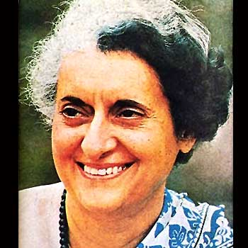

Phụ nữ ngày nay, chịu ảnh hưởng của các nhân vật nổi tiếng trong lịch sử không ít, nhưng mỗi một thời đại qua đi không bao giờ có thể lặp lại. Người đầu tiên mà chúng tôi muốn giới thiệu là Indira – Gandhi – cố Thủ tướng Ấn Độ.
Indira – Gandhi ba lần dành được thắng lợi trong các cuộc tổng tuyển cử năm 1967, 1971, và 1980 ở Ấn Độ, ba lần làm Thủ tướng, là vị lãnh tụ kế tục của dòng họ Nehru và Gandhi hùng thánh, được nhân dân Ấn Độ sung bái nhất. Bà còn là người đầu tiên tiếp nối Nehru, trở thành lãnh tụ của cuộc vận động không liên minh thế giới, là nhà chính trị thế giới thông minh lỗi lạc. Trong nhiệm kỳ chấp chính thứ 2, bà đã giành được thắng lợi trong chiến tranh Ấn Độ - Pakistan, đưa niềm hy vọng của bà lên đến đỉnh cao nhất, trở thành “người phụ nữ có quyền thế nhất trên thế giới”.
Ngày 30 tháng 10 năm 1984, bà bị ám sát. Raghib – Ganghi con trai của bà tiếp nhiệm Thủ tướng. Ngày 3 tháng 11, Ấn Độ cử hành quốc tang cho Indira – Gandhi, có hơn 1 tỷ người dân tham gia đưa tang, các đặc sứ, cố vấn, chủ tịch của hơn 104 quốc gia tham gia tang lễ, Trung quốc phái Phó Thủ tướng Diêu Y Lâm làm đặc sứ tham gia. Nhân kỷ niệm một năm ngày Indira – Gandhi tạ thế, các nhân sĩ nổi tiếng khắp nơi trên thế giới đều đánh giá rất cao những việc làm của bà. Lãnh đạo Trung Quốc khen ngợi bà đã vì sự phát triển của đất nước Ấn Độ mà cố gắng không mệt mỏi, trong cuộc vận động không liên minh phát huy tác dụng quan trọng. George-Bush – Lãnh đạo nước Mỹ nói bà là người lãnh đạo chuyên chú khích lệ lòng người. Gromyko – Lãnh đạo Liên Xô cũ nói bà là người phụ nữ vĩ đại của Ấn Độ. Margaret-Sachel – Thủ tướng Anh ca ngợi tư tưởng và tinh thần của bà mãi mãi tồn tại. Cole 0 Thủ tướng Đức khen ngợi bà đã lãnh đạo nhân dân Ấn Độ giành được những thành tựu to lớn về kinh tế, khoa học kỹ thuật, đề cao và tăng cường địa vị tôn nghiêm của Ấn Độ trên toàn thế giới. Mitlerand – Tổng thống Pháp biểu dương bà là người có tính cách kiên cường bất khuất, tinh lực phi phàm và lý trí tối cao. Lãnh đạo của một số quốc gia thứ ba trên thế giới thì đánh giá bà là nhân vật kiệt xuất trong lịch sử chính trị thế giới, là động lực thúc đẩy thế giới thứ ba, là một vĩ nhân trung với tình hữu nghị và nguyên tắc.
Cảnh vệ tấn công bất ngờ
Mỗi năm, cứ bắt đầu vào đầu tháng 10, khí hậu miền Bắc Ấn Độ rất ấm áp. Bầu trời thu cao trong sáng, khu vực miền Bắc cây xanh thành bóng mát, cỏ thơm như tấm thảm, trăm hoa đua nở, khoe sắc, muôn chim tranh tiếng hót ca, mọi người đều thích ra vườn hoa, bãi cỏ, đường bóng râm, bên dòng song nhỏ để vui chơi, tán gẫu và dã ngoạn để thưởng thức cảnh quan xinh đẹp.
Sáng ngày 30 tháng 10 năm 1984, tại nhà ở của Thủ tướng, bà Indira-Gandhi vừa chăm sóc hai đứa cháu mới bị tai nạn hôm qua, vừa phải sắp xếp buổi họp tiếp kiến người nước ngoài: Petre-Wusrinov – diễn viên vũ đài kiêm ngôi sao màn bạc nước Anh muốn viếng thăm Thủ tướng Gandhi, để làm một bộ phim thời sự truyền hình dài khoảng 20 phút.
Phủ Thủ tướng Ấn Độ ở phía Nam thủ đô Sindelhi. Đây là một tòa lạc viện chiếm khoảng 10 mẫu. Nửa phía đông là khu nhà ở, nửa phía Tây là khu làm việc. Hai khu vựa này được ngăn cách bởi khu rừng cây nhỏ lùn, giữa khu rừng có một cổng vòm được trồng đầy sắn dây cao ngất. Hai bên Đông tây đều có cảnh vệ canh giữ, phòng thủ nghiêm mật.
9 giờ 18 phút sáng hôm đó, Thủ tướng Indira-Gandhi từ biệt hai đứa cháu, rời khỏi nhà đến phòng làm việc, vệ sĩ cùng đi với bà là hai người Sikh, một người mặc chế phục, người kia mặc thường phục. Người mặc chế phục tên Sartrewant-Singer, chỉ mới 21 tuổi, trên aty cầm khẩu súng máy, làm nhiệm vụ canh phòng ở cổng vòm. Người mặc thường phục tên là Bent-Singer 33 tuổi, tay không đi bên cạnh bà Gandhi để tùy lúc bảo vệ.
Bà Gandhi băng qua vườn cỏ của khu nhà, đi về phòng làm việc khoảng 30m. Lúc bà cùng Bent-Singer đi qua cổng vòm, Sartrawant-Singer nâng khẩu súng máy lên ngang tầm tay, bà Gandhi cho rằng anh ta tỏ lòng thành khính đối với bà, nên theo thói quen bà chụm hai tay, thành ý đáp lại theo nghi lễ.
Chính ngay lúc này, Bent-Singer đi bên cạnh bà, bỗng nhiên bước chân tiến lên rất nhanh, vượt qua mặt bà Gandhi, thò tay vào mũ đội trên đỉnh đầu lấy ra một khẩu súng lục, bất ngờ xoay người bắn vào bà Gandhi. Ngay lúc đó, Sartrewant-Singer bảo vệ ở cổng vòm, cũng nâng khẩu sung máy lên ngang tầm tay bắn quét vào bà. Bà Gandhi vừa kịp la lên rồi ngã nhào xuống đất, máu loang đỏ khắp người. Bent-Singer sau khi bắn hết đạn, buông súng giơ tay hàng, Sartrewant-Singer cũng vứt súng trên mặt đất, đầu hàng các bảo vệ đang chạy tới. Chúng như muốn nói với bảo vệ là họ không còn việc gì khác nữa, họ đã làm xong việc phải làm.
Ở phòng làm việc, Petre-Wusrinov – diễn viên vũ đài kiêm ngôi sao màn bạc nước Anh đang đợi bà Gandhi, nghe thấy tiếng súng, lập tức chạy đến. Lúc bấy giờ hiên trường hỗn loạn, nhân viên bảo vệ lo sợ luống cuống chạy nháo nhào. Nhân viêc bảo vệ ngăn hành động của Wusrinov, đội nhiếp ảnh của ông lại, và muốn làm rõ xem phim nhựa của họ có đủ chứng cứ quá trình hành thích hay không, mãi đến 5 giờ sau mới đồng ý cho họ đi.
Sauk hi sự việc xảy ra không lâu, Daven – trợ lý thân tín của bà Gandhi, cùng với Sannia – con dâu trưởng của bà từ nơi ở phía Đông chạy đến. Dưới sự chỉ huy của Daven, các bảo vệ bắt đầu chấp hành luyện tập ứng biến thuần phục. Bốn người cảnh vệ khiêng thân thể đầy máu của bà Gandhi lên, Sáu cảnh vệ khác bao vây xung quanh, cùng với Daven và Sannia chạy đến chiến xe kiểu “đại sứ” màu trắng đang đậu trong sân Thủ tướng. chiếc xe này do hang xe hơi Ấn Độ sản xuất cho riêng bà, có trang bị áo giáp chống đạn và ruột xe phòng đạn. Ở trên xe, Sannia nâng đầu bà Gandhi gối lên đùi của mình.
Xe kiểu “đại sứ” theo sau tiếng kèn của xe cảnh sát mở đường, chạy thệt nhanh đến Fida – Viện nghiên cứu y học Ấn Độ ở gần đó. Đây là bệnh viện hiện đại nhất của Ấn Độ, có thiết bị hoàn thiện nhất, kỹ thuật trị liệu cao siêu nhất. Phía Viện đã sớm nhận được thông báo của Chủ nhiệm bảo an Phủ Thủ tướng, đã chuẩn bị một tổ trị liệu, gồm 12 vị bác sĩ nổi tiếng sẵn sàng tiến hành toàn lực cứu thương.
Lúc Thủ tướng Indira-Gandhi vừa được đưa đến Viện nghiên cứu y học Ấn Độ, tuy trên sắc mặt hoàn toàn không còn sức sống, nhưng nhóm trị liệu vẫn cố cứu lấy, hy vọng còn nước còn tác. Đầu tiên nối bình khí hô hấp nhân tạo cho bà, sau đó lấy đầu đạn ra khỏi cơ thể bà, khâu huyết quản và khí quản bị đầu đạn làm hỏng, một lượng máu lớn liên tục truyền vào. Do lỗ đạn quá nhiều, máu như nước suối chảy vọt ra, máu dự trữ trong kho của Viện nghiên cứu y học Ấn Độ rất nhanh chóng cạn kiệt. Phải chạy đến bệnh viện khác lấy máu về, trước sau tổng cộng dùng 88 bịch máu nhóm O. Khi đã dùng hết máu nhóm cùng loại, bác sĩ kêu gọi sự hiến máu của quần chúng đang tụ tập ở bên ngoài Viên nghiên cứu, lập tức có hơn 200 người tự nguyện hiến máu, hy vọng góp sức nhỏ cứu Thủ tướng.
10 giờ 40 phút trưa hôm đó, chức năng phổi và thận của bà Gandhi đã ngừng lại, các bộ phận tim và não cũng bắt đầu ngừng hoạt động. Nhưng, nhóm bác sĩ vẫn cứ tiếp tục cứu chữa. Mãi đến 14 giờ 30 phút, nhóm bác sĩ mới chính thức tuyên bố không cứu được bà. Trên thực tế, lúc bà Gandhi được đưa đến Viện nghiên cứu y học Ấn Độ thì đã ngưng thở, nhưng khi nhóm bác sĩ tuyên bố tin tử vong, phản ứng sơ bộ của các Bộ trưởng nội các ở bên ngoài vẫn chưa tin chắc, rất nhiều người đau xót khóc lên.
Lúc Thủ tướng bị ám sát, nhiều quan chức cao cấp của Ấn Độ đều không có ở Thủ đô New Delhi, thậm chí không có ở Ấn Độ. Tổng thống Sharstar lúc đó đang ở Tây Á. Raghiv – con trai trưởng của bà Gandhi đang ở bang Siemengalla để tiến hành hoạt động tranh cử trong cuộc tổng tuyển cử 2 tháng sau. Lúc đó, anh đang trên đường chạy về điểm tụ họp cuối cùng, chuẩn bị phát biểu diễn thuyết ở đó. Một xe cảnh sát đến báo tin, chỉ nói Phủ Thủ tướng cảy ra chuyện và yêu cầu anh ta phải nhanh chóng trở về New Delhi. Vì thế, đoàn xe của anh lập tức chuyển hướng, chạy nhanh đến phi trường gần nhất, lên máy bay trực thăng đến Calcutta, đổi máy bay đi đến thủ đô. Trên máy bay, anh mới biết được tin bà Gandhi sắp chết qua thông báo của Đài phát thanh nước Anh. Sau 5 giờ, Raghiv-Gandhi trở về đến New Delhi, biết tin mẹ đã qua đời.
Thành lập nhóm ứng biến trong Bộ nội chính, mãi đến chiều tối mới công bố tin tức bà Gandhi từ trần. Kéo dài tin tức tử vong của bà Gandhi, là để tranh thủ thời gian, vì bang Punjab, Harenna và Thủ đô New Delhi là mũi nhọn đối địch với Ấn Độ giáo và đạo Sikh. Trong thời gian đó sử dụng biện pháp ngăn ngừa, bảo đảm an toàn, để chuẩn bị ứng phó bạo loạn, phòng ngừa tình thế mất sự điều khiển.
Nhân dân Ấn Độ, đặc biệt là quần chúng thủ đô, rất quan tâm đến sự kiện xảy ra ở Phủ Tổng thống. Trưa ngày 30, dân chúng bắt đầu bàn bạc khắp thủ đô New Delhi. Suốt buổi sáng, đài truyền hình Ấn Độ tiếp tục phát chương trình bình thường, 1 giờ trưa hôm đó bắt đầu phát ra nhạc buồn, lúc này mọi người đã khẳng định bà Gandhi không còn hy vọng sống. Gần tối, chính thức thông báo bà Gandhi đã chết, một không khí u buồn thảm não bao trùm thủ đô New Delhi, rất nghiều người nghe tin đã khóc thống thiết như tin mất mẹ. Phản ứng của nhân dân cả nước hoàn toàn tương phản với sự ra đi của Thủ tướng Nehru – phụ then của bà Gandhi vào năm 1964.
Sau khi Thủ tướng Indira-Gandhi từ trần, Chính phủ trung ương Ấn Độ trên thực tế đã tê liệt, rất cần người lãnh đạo mới. Đảng Quốc Đại chấp chính Ấn Độ. Ngay chiều tối hôm đó triệu tập mở Hội nghị cao cấp, các nguyên lão của Đảng Quốc Đại đã tuyển cử Raghiv-Gandhi – con trai lớn của bà Gandhi làm lãnh tụ mới của Đảng. Tuy Raghiv trước đó có nói: sẽ không kế thừa nhiệm vụ của mẹ ngay, nhưng những viên đạn thích khách đã thay đổi quyết định của anh ta. Mặc dù anh ta hoàn toàn không chuẩn bị, nhưng để thu nhập tin tức cuộc tàn sát, anh kiên quyết gánh lấy trách nhiệm nặng nề của mẹ. Nội các mới đưa Raghiv-Gandhi lên làm Thủ tướng, lập tức tuyên bố nhận chức.
Nhiệm vụ quan trọng của Thủ tướng mới là ổn định tình thế cả nước. Giao đồ Sikh giết hại bà Gandhi, dẫn đến sự thù hận và báo thù của giáo đồ Ấn Độ giáo. Cả nước Ấn Độ, đặc biệt là thủ đô New Delhi xảy ra cuộc bạo loạn nghiêm trọng, giáo đồ Sikh trăm phương ngàn kế bức hại và tàn sát thảm khốc, không ít nhà cửa và xe cộ bị thiêu hủy, cả Thủ đô chìm trong cuộc hỗn loạn và khủng bố. Sauk hi Raghiv-Gandhi tuyên thệ nhậm chức, một mặt nén nỗi đau vì sự bất hạnh của mẹ; một mặt lại kiên quyết không chuyển dời, hướng tới nhân dân cả nước “quyết không cho sự cuồng nhiệt tộc loại này hủy diệt sự sinh tồn của quốc gia”. 10 giờ 30 phút trưa ngày 1 tháng 11, Raghiv-Gandhi phát biểu bài diễn thuyết đầu tiên với quần chúng. Ông nói: “Chúng ta không thể để cho tình cảm của chúng ta bị kích động, sự phẫn nộ chỉ có thể dẫn đến phạm sai lầm. Bất cứ nơi nào ở nước ta sinh ra bạo loạn, đều sẽ tổn thương đến linh hồn Indira-Gandhi kính yêu của chúng ta. Mỗi mọt hành động của chúng ta đều phải tuân theo phương hướng chính xác.
Indira-Gandhi đã qua đời, nhưng anh linh của bà tồn tại mãi mãi. Ấn Độ mãi trường tồn, tinh thần của Ấn Độ bất diệt!” Ông kêu gọi nhân dân cả nước nhận thức trách nhiệm của mình, vững chắc gánh vác trách nhiệm lịch sử. Lời nói của Raghiv-Gandhi và biện pháp hệ thống mà ông ta sử dụng, đã chứng tỏ ông lấy lợi ích quốc gia làm trọng, không vì mối thù giết mẹ, thể hiện tài trí trác tuyệt thế hệ thứ ba của gia tộc Nehru, không phụ lòng nuôi dưỡng và kỳ vọng của mẹ.
Căn cứ điều tra, sự kiện ám sát Indira-Gandhi lần này, bắt đầu từ tháng 1 đến tháng 3 năm 1984. Lúc bấy giờ, bang Punjab liên tiếp xảy ra việc phóng lửa, ám sát, và cướp giật, dùng vũ trang chiếm cứ Miếu vàng Amritsar, giáo đồ Sikh nhiều lần giao đấu với quân chính phủ và cảnh sát. Ngày 4 tháng 4, chính phủ Ấn Độ tuyên bố bang Punjab là “vùng đất nổi loạn nguy hiểm”. Ngày 2 tháng 6, 10 vạn quân đội Ấn Độ theo lệnh bà Gandhi tiến vào trú đóng tại bang Punjab, và bao vây Miếu vàng. Ngày 5 tháng 6, quân chính phủ giao chiến với giáo đồ Sikh canh giữ vũ trang ở Miếu vàng, hôm sau tấn công vào Miếu vàng. Trong lần xung đột vũ trang này có 576 người hi sinh, 348 người bị thương, 1471 người bị bắt. Vì sự kiện tanh máu lần này, giáo đồ Sikh dự định âm mưu hành động báo thù.
Tham gia âm mưu hành thích lần này toàn là giáo đồ Sikh, khoảng 6 đến 12 người, ngoài 1 – 2 người là dan thường ra, toàn là nhân viên cảnh vụ. Sartrewant-Singer và Bent –Singer, khi tham gia âm mưu này, thề sẽ giết bà Gandhi và Raghiv – con trai trưởng của bà.
Sau sự kiện Miếu vàng, trách nhiệm thủ trưởng bảo an là bảo vệ an toàn cho bà Gandhi, đội cảnh vệ đặc biệt vốn lấy giáo đồ Sikh làm chính, nay giảm bớt thay đổi đại bộ phận người, chỉ giữ lại một ít. Cá giáo đồ Sikh được lưu giữ lại trong đội cảnh vệ đặc biệt ở Phủ Thủ tướng, đều là người được cho là rất trung thành; trong đó, có Sartrewant-Singer và Bent-Singer. Hai người không những có được sự tín nhiệm của viên chỉ huy đội cảnh vệ, mà còn nhận được sự tin tưởng của bà Gandhi. Đặc biệt là Bent-Singer đảm nhiệm việc theo sát bảo vệ bà Gandhi đã gần tám năm rồi. Lúc đó có người đã nhắc nhở bà Gandhi cảnh giác với hai người lính cảnh vệ giáo đồ Sikh ở bên mình, bộ phận tình báo cũng đã chính thức đề ra việc bà để hai người này lưu lại bên mình là không thích hợp lắm, phải nhanh chóng điều ra ngoài. Ngược lại Thủ tướng Indira-Gandhi rất tin tưởng chúng. Và đây chính là cơ hội để họ hành thích bà.
Sartrewant-Singer và Bent-Singer sau khi tuyên thệ cùng chờ thời cơ ra tay, Theo lịch trực chiều ngày 30 tháng 10, Bent-Singer chấp hành nhiệm vụ bảo vệ, Sartrewant-Singer thường trực vào buổi sáng. Hai người cùng trực một ngày, thật là cơ hội hiếm có, đáng tiếc không phải cùng một thời gian. Sartrewant-Singer chủ động đổi ca trực. Như thế, Sartrewant-Singer và Bent-Singer được trực cùng một thời gian, tạo cơ hội cho chúng hành động.
Bent-Singer là cảnh vệ đi theo bên cạnh bà Gandhi, còn Sartrewant-Singer là người đứng ở trạm canh gác cố định. Hôm đó lúc đi làm, Sartrewant-Singer trình cấp trên nói là mình bị tiêu chảy, xin phép đứng ở trạm canh gần tòa kiếm trúc được đặt trong Phủ Tổng thống, để tiên lúc cần có thể sử dụng phòng vệ sinh ở gần đó. Cấp trên đồng ý yêu cầu của anh ta, sắp xếp cho anh ta đứng ở trạm canh gác dưới cổng vòm giữa khu rừng cây nhỏ lùn phân cách nơi ở và chỗ làm việc. Cổng vòm này là nơi bà Gandhi phải đi qua mới vào nơi làm việc, là địa điểm và cơ hội ngàn năm có một để hai giáo đồ Sikh này thực thi âm mưu hành thích đã đề ra.
Liên quan về cuộc gặp gỡ và kết cục sau khi hành thích Thủ tướng của Sartrewant-Singer và Bent-Singer có hai giả thuyết. giả thuyết thứ nhất là Sartrewant-Singer bị bắn chết tại trận, Bent-Singer bị thương nặng cuối cùng cũng chết. Một giả thuyết khác là, sau khi hai người bị bắt áp giải vào phòng cảnh vệ. Ở đó, Bent-Singer bỗng nhiên xông vào một cảnh vệ, định cướp đoạt khẩu súng mày trên tay; Sartrewant-Singer cũng đồng thời từ trong khăn đội đầu lấy ra cây chùy đã cất giấu để hành hung. Cảnh vệ ở đó bắn sung chế ngự, kết quả Bent-Singer chết ngay tại chỗ. Sartrewant- Singer bị thương nặng và chết sau đó. Xem ra giả thuyết thứ hai tương đối có thể tin cậy. Bởi vì thi thể của Sartrewant-Singer và Bent-Singer hoàn toàn không có ở hiện trường hành thích trong báo cáo đầu tiên, mà ở trong phòng cảnh vệ. Sau sự việc, người chứng thực là Sartrewant, Petre-Wusrinov – diễn viên vũ đài kiêm ngôi sao màn bạc nước Anh và đội nhiếp ảnh truyền hình, sau khi nghe tiếng súng hành thích lần đầu, phải qua một thời gian rất dài mới nghe được tiếng súng thứ hai. Lúc đó họ đang ở ngoài phòng làm việc của Thủ tướng, nghe thấy tiếng sung từ trong phòng truyền ra. Kết cục cuối cùng là hai tên hung thủ đều chết, còn những đồng phạm khác cũng bị xử lý theo pháp luật.
Phu nhân Gandhi chết rồi, nhưng cuộc đời và con người, tư tưởng và tác phong, tâm linh và khí chất, sự nghiệp và cống hiến của bà, lại luôn được mọi người tưởng nhớ.
Theo bước chân Gandhi thánh hùng
Indira-Gandhi sinh ngày 19 tháng 11 năm 1917 trong một tòa kiến trúc rộng của vùng đất xinh đẹp của thủ phủ Allagabag bang phía Bắc Ấn Độ. Biệt thự xinh đẹp này chính là cung Anande của Modiral-Nehru – ông nội Indira-Gandhi.
Gia tộc Nehru là một gia tộc lớn ở miền Bắc Ấn Độ. Ông nội của Modiral-Nehru, thời kỳ thực dân Anh thống trị đã từng đảm nhiêm chức vụ Cục trưởng cảnh sát thành phố Delhi, trong cuộc đại khởi nghĩa phản Aanh của nhân dân Delhi, bị người Anh bắt bớ và suýt mất mạng. Modiral-Nehru có lòng tự tôn mãnh liệt, sau khi tốt nghiệp đại học, ông bước vào xã hội thương lưu làm nghề luật sư, nhanh chóng trở thành luật sư nổi tiếng, với thu nhập rất cao. Ông dùng số tiền kiếm được xây dựng cung Anande. Cung này giống như một trang viên rất lớn, có tường thành dày, cao bao quanh và hành lang dọc theo; có hồ bơi trong tòa nhà, hai bên có phòng thay đồ nam nữ, trong sân rộng lớn có bãi cỏ, vườn hoa, sân quần vợt. Tòa nhà này rất rộng lớn, có nhiều nô dịch, vài chú ngựa lùn, thú săn …Chủ nhân rất thích tòa biệt thự này, thường gọi nó là “cung vui vẻ”.
Năm 1929, trên mảnh đất trống của tòa biệt thự, Modiral lại xây thêm nhà cao tầng hiện đại, kiểu dáng rất mới lạ, mặt trên là kết cấu đỉnh tròn, giống cái bánh ngọt đám cưới, ông gọi nó là “cung vui vẻ” thứ hai. Gia tộc Nehru có quan hệ mật thiết vơi Đảng Quốc Đại Ấn Độ. Sauk hi xây dựng cung vui vẻ thứ hai, Modiral đem cung Anande (cung vui vẻ thứ nhất) tặng cho Đảng Quốc Đại Ấn Độ, làm trung tâm hoạt động chính trị của Đảng, và đổi tên là “cung Tự trị”.
Jawahalar-Nehru – cha của Indira-Gandhi tốt nghiệp đại học Cambridge ở nước Anh, lại học luật 2 năm. Năm 1912, sau khi lấy được bằng luật sư trở về Ấn Độ, làm cấp cao ở Viện pháp luật Allahabad, đồng thời tích cực hoạt động Đảng Quốc Đại. Ông là một người có chủ nghĩa dân tộc vững chắc, trong quyển “Tư truyện” của mình ông viết: từ nhỏ đã nuôi mộng “tay nắm kiếm bén, đấu tranh để bảo vệ và giải phóng Ấn Độ”. Không lâu sau, ông trở thành trợ thủ đắc lực của Nodiral-Nehru.
Năm 1915, Karamchander-Inhandas-Gandhi từ Châu Phi trở về Ấn Độ; Do lúc ông ta ở Châu Phi, đã chọn lấy biện pháp phi bạo lực để đấu tranh phản đối sự kì thị cư trú, sau khi trở về Ấn Độ, mọi người tôn ông làm anh hùng. Ông nhanh chóng tiếp cận Đảng Quốc Đại, và trở thành lãnh tụ cuộc vận động giành độc lập của nhân dân Ấn Độ, đưa ra tư tưởng phi bạo lực và vận động không hợp tác.
Jawahalar-Nehru hết lòng khen ngợi tư tưởng thánh hùng của Gandhi, cho rằng ông đã bị Gandhi làm “nghiêng ngả hoàn toàn”, cảm thấy Gandhi “giống như một dòng điện lưu cực mạnh….lại giống như ánh chớp, phá tan đêm tối, tiêu trừ tấm màn ngăn che trên mắt”. Khiến ông giống như một phần tử trí thức phương Tây và môt thiếu niên từ trong đêm tối trở thành một người Ấn Độ và một chiến sĩ cách mạng chủ nghĩa dân tộc dân chủ chân chính.
Đầu năm 1916, Jawahalar-Nehru kết hôn với Kamaira-Cower “người phụ nữ được mệnh danh là đẹp nhất”. Qua năm sau sinh ra Indira-Gandhi.
Mặc dù các chủ nhân nam nữ của cùng vui vẻ tôn sung văn hóa phương Tây, theo đuổi phương thức sinh hoạt văn minh châu Âu, nhưng vẫn cổ hủ đối với vấn đề sinh con trai hay con gái. Khi nghe bác sĩ Scotland chính thức tuyên bố: “sinh được một cô nương xinh đẹp!”, rất nhiều người đều cảm thấy thất vọng, bà nội của Indira buột miệng thốt ra: “Tại sao không phải là một đứa cháu trai!” Ông nội của Indira thấy thái độ bất mãn của vợ, nghiêm mặt khuyên bảo bà: “Bà phải biết, đứa con gái này của Modiral có thể sẽ vượt qua một ngàn đứa con trai”. Tuy ông nói ngoài miệng thế, nhưng trong lòng cũng rất muốn có thêm một đứa cháu trai. Có thể thấy được điều đó trong thái độ của ông đối với những người khách đến chúc mừng.
Vài tuần sau, SaruaginNei – nữ thi sĩ Ấn Độ trong thiệp chúc mừng gủi đến Modiral và Kamaira có viết: “Bá gái này sẽ là chúa tể mới của Ấn Độ”. Quả thật Indira đã trở thành nữ Thủ tướng đầu tiên của Ấn Độ, và liên tiếp chấp chính 15 năm, trở thành nhà chính trị kiệt xuất ở Ấn Độ và trên thế giới.
Indira từ nhở rất xinh đẹp, hai mắt to màu lam sáng rỡ, mái tóc quăn da dẻ trắng ngần, có đủ nét đặc trưng của người Aryan, rất được sự sủng ái của mọi người trong nhà Nehru, đặc biệt là ông bà nội. Nhưng sự cưng chiều của dòng họ nhanh chóng bị sức lực bên ngoài chiếm đoạt một cách thô bạo. Giấc mộng thời niên thiếu của Indira bị tan vỡ.
Thời kỳ chiến tranh thế giới thứ nhất, nước Anh đã biến Ấn Độ thành nơi cung cấp sức người sức của để chúng tiến hành cuộc chiến tranh. Gandhi hùng thánh, ban đầu còn tỏ ra chống đối, nhưng sau đó lại khích lệ người Ấn Độ gia nhập quân đội Ấn Độ thuộc Anh, giúp đỡ chiến tranh nước Anh, chủ động dùng tình yêu để trao đổi sự đồng tình và thương xót của người Anh đối với nhân dân Ấn Độ. Nhưng sau khi kết thúc chiến tranh, người Anh hoàn toàn không đồng tình với nhân dân Ấn Độ. Ảo tưởng của Gandhi tiêu mất, ông triệu tập nhân dân Ấn Độ đình công bãi chợ, mở rộng cuộc vận động phi bạo lực, được sự hưởng ứng của nhân dân cả nước.
Ngày 13 tháng 4 năm 1919, Đảng Quốc Đại Ấn Độ ở Amri thành phố lớn thứ hai của tỉnh Punjab phía Bắc Ấn Độ, tổ chức Hội nghị chống hòa bình lần thứ nhất, có 2 vạn người tham gia, gặp phải sự trấn áp của quân đội nước Anh, làm cho 379 người tử vong, 1200 người bị thương. Tiếp đó, người Anh lại ra lệnh bắt Gandhi. Đốm lửa nhỏ này càng bốc cao ngọn lửa hận thù của nhân dân Ấn Độ, đã đến lúc phải đương đầu đẫm máu với thực dân Anh. Sự kiên lần này trở thành bước ngoặt trong lịch sử Ấn Độ. Ông nội của Indira được Đảng Quốc Đại tiến cử làm Chủ tịch Đảng Quốc Đại, gánh vac trách nhiệm lãnh đạo nhân dân Ấn Độ chống lại sự thống trị của thực dân Anh. Cuộc sống trong gia đình Indira hoàn toàn thay đổi, ông nội, cha, me của bà liền cùng với Gandhi thánh hùng, dốc toàn bộ sức lực vào cuộc vận động giải phóng dân tộc Ấn Độ. Cuộc sống thiếu niên của Indira bước vào những năm tháng đầy sôi động.
Năm đó Indira vừa tròn 4 tuổi, ông nội Modiral và người cha Jawahalar vì kích động phản đối chính phủ nước Anh mà bị bắt. Họ căn cứ vào chính sách của Gandhi thánh hùng chế định, thà ngồi tù chứ không giao nạp tiền phạt. Cảnh sát liền đến niêm phong nhà; đem vật phẩm bán đi để đổi vàng. Indira con nhỏ, không khống chế được tình cảm, nắm chặt bàn tay nhỏ lại, xông lên trước. hét thật to vào cảnh sát: “Không cho các ngươi lấy những thứ đó đem đi, đó là của nhà chúng tôi”. Biểu hiện tinh thần phản kháng mạnh liệt.
Để tẩy chay hàng hóa nước Anh, nhà Nehru hưởng ứng cuộc vận động không hợp tác của Gandhi, lấy những đồ đạc ở trong nhà như bộ âu phục, nhung thiên nga, tơ lụa, rèm của mua về từ châu Âu, đem đến sân thượng của cung vui vẻ đốt lên thành ngọc đuốc. Việc làm này đã để lại một ấn tượng sâu sắc đối với tuổi thơ của Indira. Về sau, khi người dì đến tặng cho Indira một bộ đồ ngoại rất xinh đẹp, tuy rất thích, nhưng kiên quyết không mặc nó, bởi vì đây là hàng hóa nước ngoài. Lúc người dì hỏi bà: “con búp bê mà cháu đang ôm cũng là hàng nước ngoài thì phải làm thế nào đây”, bà quả thực khó nghĩ suốt mấy hôm. Cuối cùng, bà tự mình ra tay, ở trên sân thượng cung vui vẻ, đã chuẩn bị một ngọn đuốc nhỏ, rưng rưng nước mắt đem con búp bê mà mình yêu quý đốt đi. Rất nhiều năm sau bà hồi tưởng lại nói: “Cảm nhận của tôi lúc đó, giống như là đang mưu sát một người”.
Năm 1971, Indira đã từng nói với một ký giả của Công ty quảng cáo nước Anh: “Khi tiến hành đấu tranh giành tự do, cảnh sát không ngừng đến niêm phong, tịch thu đồ đạc trong nhà chúng tôi, lại còn bắt người, chúng tôi không thể không giấu đi những vật phẩm in ấn trái phép. Lúc đó tuy tôi rất nhỏ, nhưng đối với tất cả những chuyện đó đều có phần của tôi… Tôi tham gia việc du hành và tập hợp, tuổi thơ của tôi hoàn toàn không được bảo vệ”. Đúng thế, Indira cùng những đứa trẻ khác diễn những màn kịch thời sự, dẫn những đứa trẻ đi chơi trong vườn, bọn chúng đứa nào cũng cùng với bà hô cao khẩu hiệu: “Cách mạng muôn năm”, biểu thị quyết tâm phản kháng thực dân Anh.
Năm 1924, Gandhi đề xướng hoạt động tự kéo sợi, tổ chức thành “Hiệp hội kéo sợi bằng tay”, không mua các loại vải của nước Anh. Lúc bấy giờ, Indira-Gandhi tuy mới 8 tuổi, cũng chủ động hỏi Gandhi: Cháu có thể làm một chút việc nhỏ nào đó vì cuộc vận động tự kéo sợi này không? Gandhi nói: Chàu có thể tổ chúc một “Hiệp hội thiếu nhi kéo sợi”, tức là Bộ thiếu nhi của Hiệp hội kéo sợi bằng tay, Indira-Gandhi thật lòng tuân theo chỉ thị của Gandhi, tràn đầy nhiệt tình, tổ chức một nhóm nhi đồng dệt vải, tự chuẩn bị một máy quay sợi, rồi dệt ra những sợi vải thô.
Năm 1929, Indira-Gandhi được 13 tuổi, đúng lúc cuộc vận động giành độc lập của Ấn Độ đã qua một năm khảo nghiệm nghiêm ngặt. Modiral – ông nội của bà đã mãn nhiệm kỳ thứ 2 Chủ tích Đảng Quốc Đại. Hội nghị Đảng Quốc Đại năm đó tuyển cử Jawahalar – cha của bà làm Chủ tịch Đảng Quốc Đại, trở thành lãnh tụ mới giương cao thanh thế to lớn của cuộc vận động giành độc lập dân tộc. Hội nghị quyết định lấy việc giành độc lập hoàn toàn nước Ấn Độ làm mục tiêu phấn đấu của Đảng Quốc Đại. Indira-Gandhi cũng tích cực ủng hộ và tham gia vào “cuộc chiến đấu cuối cùng” theo chỉ thị của Gandhi thánh hùng, mong muốn gia nhập Đảng Quốc Đại, nhưng vì bà còn quá nhỏ nên bị cự tuyệt.
Indira-Gandhi hoàn toàn không nhụt chí, bà dựa vào câu chuyện trong “Mở rộng thành Rome”, tổ chức một “đội khỉ” đấu tranh với thực dân Anh. Trong đội khỉ có đầy đủ trai gái, lúc mới thành lập đã có hơn 1.000 thành viên. Khi Indira diễn thuyết trong đại hội thành lập đội khỉ, đã tuyên bố ý nghĩ, mục dích và yêu cầu của việc thành lập đội khỉ. Lúc đầu, những người trưởng bối của Indira và chính quyền nước Anh lúc bấy giờ đều xem đội khỉ là một trò chơi của trẻ con. Nhưng những thành viên trong đội khỉ quả thực đã tích cực làm việc trên nhiều phương diện: viết thông báo, gửi thư đi, làm cơ, treo cờ, nấu cơm, truyền tin tức, thu nhập tình báo v.v… Những việc mà nếu như người lớn làm thì sẽ bị thực dân Anh chú ý, nhưng những đứa trẻ đã lợi dụng các cơ hội vui chơi, đùa giỡn để truyền tin, thu tập tin tức…
Một lần, ở một thôn cách nhà Indira không xa, xảy ra cuộc chiến đấu của những chiến sĩ phản Anh với quân đội Anh, có một số chiến sĩ bị thương. Lúc bấy giờ, có những bác sĩ sợ bị người tố cáo nên không dám cứu thương các chiến sĩ giữa ban ngày, Indira đã tự mình dẫn đầu đội khỉ đi chăm sóc người bị thương, rồi lấy một căn phòng lớn trong nhà của mình đổi thành phòng bệnh.
Lại có một lần, Hội Ủy viên chấp hành tôi cao Đảng Quốc Đại mở cuộc họp trong nhà của bà, định ra kế hoạch mới vận động không phục tùng. Cảnh sát nghe tin, nhanh chóng bao vây căn phòng đó. Những người tham gia Hội nghị vì bảo vệ bí mật của Đảng, đã đem biên bản và văn kiện của cuộc họp giấu vào trong rương (hòm) hành lý ở phía sau xe hơi nhà bà. Indira nhanh trí, lập tức đến ngồi trên xe, để tài xế lái xe chạy ra ngoài. Khi xe hơi vừa ra đến cổng lớn, có một cảnh sát chặn xe lại, và tiến hành xét hỏi. Indira rất bình tĩnh, dũng cảm, bà làm bộ nói môt cách bực tức: “Nếu như các người không để cho tôi đi học, tôi đến trễ sẽ bị phạt. Tôi chỉ còn cách nói sự thật cho thầy giáo biết, là cảnh sát các người đã có ý cản xe của người khác”. Cảnh sát không thể tiếp tục tra xét, để cho chiếc xe hơi mang những văn kiện bí mật đi ra khỏi nhà một cách dễ dàng.
Mười mấy năm sau, Indira nhớ lại thời gian làm việc của đội khỉ, khẳng định đầy đủ tổ chức của Đội thiếu niên này là một hoạt động “có hiệu quả”. Bà nói: “những người mới đầu xem thường đội khỉ, sau đó đã thay đổi ý kiến, bởi vì chúng tôi đã làm nhugn74 công việc vô cùng gian khổ”.
Người phụ nữ có quyền thế nhất
Sự giáo dục của gia đình Indira giúp bà rèn luyện ý chí. Khi phụ thân Jawahalar ở trong tù đã viết cho Indira tổng công hơn 200 lá thư, tiến hành giáo dục vỡ lòng đối với bà, hướng dẫn bà cách đọc sách, trả lời các vấn đề khó khăn mà bà nêu ra.
Đến tuổi đi học, đầu tiên Indira học trong trường giáo hội ở Allagabad. Sau đó, thông qua những người bạn cùng học ở nước ngoài với cha bà, đưa bà đến vùng ven cách nhà khoảng 1.000 dặm Anh trọ học. Sau khi tốt nghiệp, thi vào trường Đại học quốc tế Spitinicetan. Ở trường Đại học, Indira học được rất nhiều tri thức, đặc biệt là được sự chỉ bảo tận tình của rất nhiều nhà nghệ thuật nổi tiếng và của Tagore vĩ nhân trên văn đàn Ấn Độ. Sau đó, bà cùng với mẹ đến châu Âu trị bệnh, tham quan đô thị lớn nổi tiếng ở châu Âu, sau đó quyết định vào nghiên cứu sâu hơn ở Đại học Oxford. Tháng 2 năm 1939, Indira thi vào học viện Somevil của Đại học Oxford, ở trong đó học hành chính, quản lý sự nghiệp xã hội, lịch sử, nhân loại học…; còn mở rộng tìm đọc qua các loại sách về nghệ thuật, khảo cổ, kiến trúc học, tư tưởng tôn giáo…; tham gia Công Đảng nước Anh, trở thành thành viên của Chi bộ học sinh, được tiếp xúc rộng rãi với người lãnh đạo Công Đảng nước Anh. Sự học tập và hoạt động này, là nền tảng tri thức để bà triển khia hoạt động chính trị, quản lý quốc gia một cách vững vàng. Bà đã gặp được các vĩ nhân Roman-Rolin, Edward-Thompson, George-Shaw và Einstein, góp phần mở rộng trí thức và trí tuệ của bà, khiến bà trợ thành một người tri thức uyên bác, am tường sách vở. Chiến tranh thế giới thứ 2 bùng nổ, bà chưa nhận được học vị của trường Đại học Oxford, nhưng phải cùng với người yêu là Feroze-Gandhi rời London trở về nước. Tháng 3 năm 1941, lại gia nhập vào trong lò lửa của cuộc đấu tranh giành độc lập dân tộc Ấn Độ ở Bombay.
Sau khi Indira về đến Ấn Độ, đến nhà tù thăm cha bà, và báo cho ông biết là muốn kết hôn với Feroze-Gandhi. Thự ra, năm Indira 16 tuổi, Feroze đã cầu hôn bà, nhưng bà chưa chấp nhận. Anh hoàn toàn không nhụt chí, vẫn tiếp tục theo đuổi bà, cuối cùng dưới sự đồng ý của cha và sự bảo vệ của mẹ Indira, sau hơn 9 năm chờ đợi, đã giành được tình yêu của Indira. Tin Indira quyết định kết hôn cùng Feroze vừa truyền đi, gặp phải sự phản đối của rất nhiều người, nguyên nhân vì Feroze là giáo đồ của đạo thờ Thần Lửa, không phải là giáo phái chủ yếu của Ấn Độ. Lúc này, Jawahalar – cha của Indira và Gandhi thánh hùng ra mặt bảo vệ, cuối cùng hai người kết hôn vào ngày vào ngày 26 tháng 3 năm 1942.
Ngày 9 tháng 8 năm 1942, chính phủ Anh nhân việc Đảng Quốc Đại phản đối soạn thảo hiến pháp mới, giữ vững nguyên tắc độc lập Ấn Độ, bắt Gandhi, Nehru và toàn bộ thành viên của Hội ủy viên công tác Đảng Quốc Đại. Hành động này kích thích sự phẫn nộ của nhân dân Ấn Độ, một cuộc hỗn loạn trong nước xảy ra, trụ sở bị đốt cháy, đường sắt bị cạy tung, cầu cống bị phá hủy… Indira cùng với Feroze cũng tham gia hoạt động diễu hành kháng nghị có tính quần chúng, bị nhà cầm quyền nước Anh bắt giữ. Đây là lần thứ nhất cũng là lần duy nhất trong cuộc đời bà bị gian vào ngục. Ở trong tù, Indira cũng giống như những người bị bắt giam tiến hành tranh đấu. Sự quan tâm của bà giống như người cha, giáo dục phạm nhân thanh niên, dạy cho họ đọc sách biết chữ, giảng giải đạo lý cho họ nghe. Qua 8 tháng trong tù, đã để lại ấn tượng sâu đậm cho Indira. Bà nói: “Tám tháng sống trong tù đã rèn luyện tính cách của tôi, rèn luyện nhân cách con người tôi”.
Năm 1945, chiến tranh thế giới chống Pháp kết thúc thắng lợi, Công Đảng Anh giành được thắng lợi trong cuộc bàu cử, Chính phủ Công Đảng Anh ra lệnh phòng thích những người lãnh đạo Đảng Quốc Đại Gandhi hùng thánh và Nehru, đưa ra phương án giải quyết độc lập Ấn Độ. Nehru kết thúc cuộc sống mười năm trong tù, trở thành người đứng đầu Chính phủ lâm thời và lãnh đạo Hội nghị lập hiến. Trải qua thời gian dài phục hồi lực lượng, ngày 15 tháng 8 năm 1949, nước Anh đem chính quyền chuyển giao cho Ấn Độ và Pakistan, Ấn, Pa trở thành vùng tự trị của nước Anh. Sáng sớm ngày 15 tháng 8, trong Hội nghị đặc biệt của Hội nghị lập hiến được mở ra ở Delhi, Ấn Độ chính thức tuyên bố độc lập, Jawahalar-Nehru đảm nhiệm chức thủ tướng đầu tiên của Chính phủ Ấn Độ.
Chính trong buổi tối trước ngày độc lập Ấn Độ, ngày 30 tháng 1 năm 1948, Gandhi thánh hùng bị phần tử cuồng nhiệt của Ấn Độ giáo ám sát. Đây là tổn thất lớn của nhân dân Ấn Độ. Indira-Gandhi vô cùng đau thương trước cái chết của ông, bà đánh giá rất cao cuộc đời và lý tưởng của ông.
Trong những năm tháng đấu tranh anh dũng giải phóng dân tộc, mang lại nền độc lập cho Ấn Độ của Indira và Feroze, tình yêu của họ đã có kết quả. Ngày 20 tháng 8 năm 1944, Raghiv – con trai lớn của họ đã ra đời tại Bombay; tháng 12 năm 1946, Sanjai – con trai kế sinh ra ở Lucknow. Điều này mang lại niềm vui cho Indira, cũng tăng thêm trách nhiệm cho bà. Bà không những phải tiếp tục hòa mình vào hoạt động chính trị, mà còn phải gánh vác trách nhiệm làm vợ và làm mẹ. Như trong tự thuật của mình, bà viết: “Điều quan trọng nhất đối với tôi là làm thế nào xử lý tốt giữa hai nghĩa vụ trách nhiệm công chức và chu toàn bổn phận đối với gia đình con cái”.
Sau khi Nehru đảm nhiệm chức thủ tướng Ấn Độ nhiệm kỳ đầu, Ấn Độ hoang tàn đổ nát đang xây dựng lại, công việc của ông rất bận, dinh thự và sinh hoạt hằng ngày cần phải có người chăm sóc. Mẹ của Indira-Gandhi đã sớm qua đời, em gái của bà đã được đề cử làm Đại sứ Liên Hiệp Quốc đóng ở Ấn Độ, người em gái thứ hai ở Bombay, cách thủ đô rất xa. Vì thế Indira là con gái lớn của Nehru, chủ động gánh vác trách nhiệm nữ chủ nhân của Phủ Thủ tướng. Phụ Thủ tướng mỗi ngày đều có khách trong, ngoài nước, bao gồm nhân sĩ các giai tầng cao cấp, Bộ trưởng các bộ trong nước, người lãnh đạo Chính phủ và đứng đầu nước ngoài; những việc nghĩ lại, đón tiếp, tiệc tùng, nói chuyện, đến sắp xếp tham quan, mở hội chiêu đãi, cả dùng xe, cảnh vệ đều một tay bà. Indira đã làm nữ chủ nhân của Phủ Thủ tướng, lại còn làm thư ký cho thủ tướng, từ sáng đến tối, bận rộn không ngừng. Dựa vào sự thông minh, tài trí của mình, Indira nhanh chóng trở thành cánh tay đắc lực của Nehru.
Nehru rất yêu Indira, cũng rất tôn trọng Indira. Indira đã là vệ sĩ chủ yếu trên vũ đài quyền lực của Nehru, cũng là con đường liên lạc có hiệu quả nhất của ông. Indira ngoài việc làm nữ chủ nhân giúp Nehru tiếp đãi khách quý nước ngoài, còn thường cùng với Nehru ra nước ngoài thăm viếng, đã từng đi qua các nước Anh, Mỹ, Liên Xô, Trung Quốc, Indonesia, Singapore, được gặp gỡ các vị Lãnh đạo Chính phủ các nước. Năm 1955, bà cùng Nehru dự hội nghị Bandung quốc gia Á Phi, thu thập được những kinh nghiệm giáo huấn có ích, học được không ít vấn đề, còn kết giao với những vị Lãnh đạo của hai mươi mấy quốc gia, giúp ích cho sự phát triển của bà sau này.
Tháng 2 năm 1959, Indira-Gandhi trong Hội nghị Đảng Quốc Đại hàng năm, được bầu làm Chủ tịch Đảng Quốc Đại Ấn Độ. Đây là sự việc quan trọng nhất trên con đường chính trị của bà, cũng là nấc thang quan trọng đưa bà lên vị trí người lãnh đạo cao nhất của Ấn Độ. Vì sao Indira có thể gánh vác trách nhiệm Lãnh đạo Đảng Quốc Đại? Do Nehru có ý tiến cử bà làm người kế vị chính trị? Hay là để Indira thay thế Nehru? Giới chính trị Ấn Độ lúc bấy giờ nghi vấn và suy đoán rất nhiều. Thực ra, cả hai nhân tố này đều tồn tại. Lúc bấy giờ, Nehru đã 70 tuổi, trong lòng rất hy vọng Indira kế nhiệm. Khi Indira được chọn làm chủ tích Đảng Quốc Đại đã làm việc rất xuất sắc, có chủ kiến, có sáng tạo. Bà yêu cầu Đảng Quốc Đại thả những người nô lệ; bà chủ trì Hội nghị chuyên môn Đảng Quốc Đại thảo luận vấn đề kế hoạch kinh tế 5 năm; bà tổ chức lớp huấn luyện nâng cao trình độ cán bộ Đảng Quốc Đại; bà sửa chữa việc tài chính của Đảng Quốc Đại, cải cách cơ cấu lãnh đạo của Đảng; bà vùi đầu vào việc “du hành đường bộ”, thâm nhập vào các khu vực trong nước để hiểu được tình hình và tiếp cận quần chúng, bà còn giúp Bombay giải quyết vấn đề tranh chấp ngôn ngữ;v.v… Indira rất xem trọng công việc quốc tế, đồng tình với cuộc vận động chủ nghĩa dân tộc, bảo vệ cuộc đấu tranh phản đối chủ nghĩa thực dân, và gánh vác trách nhiệm Ủy viên Cục chấp hành Tổ chức giáo khoa văn của Liên Hiệp Quốc.
Ngày 27 tháng 5 năm 1964, Thủ tướng Nehru qua đời, Indira vô cùng đau xót. Nhưng bà hoàn toàn không buông bỏ chính trị, đối với nước Công Hòa Ấn Độ do một tay cha xây dựng lên, bà không sánh được nhiệt tình yêu thương ấy, thì phải tận lực làm việc phục vụ. Bà thông qua Sharstri tân Thủ tướng, tự mình gánh vác trách nhiệm Bộ trưởng Bộ phát thanh tin tức, ở vị trí thứ tư trong hàng Bộ trưởng. Bà nắm bắt cơ cấu tuyên truyền, nên tẹn tuổi của bà thướng thấy trên báo, dẫn đến sự hoan nghên và chú ý của quần chúng. Bà giúp bang Madras giái quyết vấn đề náo loạn. ngôn ngữ giữa các địa phương. Năm 1965, khi xung đột vũ trang lần thứ hai giữa hai nước Ấn – Pa, bà thâm nhập vào tiền tuyến cổ vũ sĩ khí, biết rõ lòng dân và nhận được sự đánh giá tốt của Sharstri.
Để giải quyết hòa bình cho xung đột Ấn – Pa, dưới sự hòa giải của Liên Xô, Sharstri – Thủ tướng Ấn Độ và Ayub Khan-Muhammad – Tổng thống Pakistan sang Liên Xô ký kết “tuyên ngôn Tashkent”. Ngày 11 tháng 1 năm 1966, Sharstri vì bệnh tim đột phát, đã qua đời ở Tashkent. Đây là cơ hội tốt để Indira tiếp nối con đường và hy vọng của cha. Lúc bấy giờ, Desaix kiêu ngạo tự mãn, coi tất cả là con số không dưới mắt ông, ngôi vị Thủ tướng chẳng ai có thể xứng đáng hơn ông. Còn Indira thì sử dụng biện pháp binh yếu, giữ gìn thái độ khiêm nhường. Kết quả, ngày 19 tháng 1, trong Đoàn Đảng tuyển cử hội nghị Đảng Quốc Đại, Indira đã vượt quá 2/3 số phiếu, chiếm ưu thế tuyệt đối, được chọn làm Lãnh tụ Đoàn Đảng Hội nghị Đảng Quốc Đại. Chiếu theo quy định Hiến pháp Ấn Độ, chức Thủ tướng đương nhiên thuộc về bà, trở thành nữ Thủ tướng được bầu cử đầu tiên của Ấn Độ, cũng là vị nữ Thủ tướng thứ hai trên thế giới lúc bấy giờ, trừ Bandaranaike phu nhân của Sri Lanka.
Nhận chức Thủ tướng Indira vừa tròn 48 tuổi, sức sống tràn trề, trước mặt những người bạn đồng lieu, bà dường như đại biểu cho một thời đại mới. Buổi đầu chấp chính, bà thực hiện công việc một cách cẩn thận, vì không đủ nghị lực, lại không rành từ lệnh. Không lâu sau, những vấn đề còn đọng lại, như vấn đề lương thực, vấn đề Punijab, vấn đề tiền Ấn Độ bị xuống giá và vần đề giết mổ bò, bà biểu hiện tác phong xông xáo nghiêm chỉnh thực hành, nhanh chóng cắt trừ nhiễu loạn. Trên lĩnh vực ngoại giao, bà tuân theo chủ trương không liên minh của Nehru, đối với Mỹ, Liên Xô nói chung chọn chính sách bình quân. Có thể nói, khi Nehru mất, ngoài Indira-Gandhi ra, không tìm được một vị lãnh tụ nao được cả nước Ấn Độ công nhận.
Trong năm đầu tiên Indira-Gandhi giữ chức Thủ tướng, đấu tranh hệ phái trong Đảng Quốc Đại còn chưa kịch liệt. Dần dần, do Indira-Gandhi trọng dụng một số người có màu sắc cấp tiến làm đầu mối, dẫn đến việc phản đối phái Sindeaja cánh hữu bảo vệ nhà đại tư bản. Phái này được sự bảo vệ của những người thuộc Desaix, chiếm cứ ưu thế trong Đảng, âm mưu hạ đài Indira-Gandhi. Indira-Gandhi dùng hành động chủ động, tháng 7 năm 1966, tuyên bố bãi chức Phó Thủ tướng kiêm Bộ trưởng tài chính của Desaix, Chính phủ lấy 14 ngân hàng lớn nhất nhập về tài sản quốc gia. Ký giải báo chí Ấn Độ lúc bấy giờ cho biết: “dường như chỉ trong 1 đêm, không khí chính trị đã thay đổi, bà trở thành anh hùng của nhân dân, nhân dân tin tưởng bà vì lợi ích của họ, hạn chế giai cấp giàu có”. Indira đi đến đâu, cũng có hàng trăm ngàn người cùng khổ và giai cấp trung lưu hoan nghênh, bà đã xây dựng nên hình tượng người Lãnh tụ được nhân dân cùng khổ đồng tình. Nhưng, từ đó về sau, nội bộ Đảng Quốc Đại phân chia thành Đảng Quốc Đại do Indira- Gandhi lãnh đạo (phái chấp chính) và Đảng Quốc Đại do phái Sindeaja hợp thành (phái tổ chức). Đảng Quốc Đại của Indira- Gandhi tiến một bước thông qua “Nghị quyết liên quan về chính sách kinh tế”, thực hành biện pháp cải cách hệ thống kinh tế. Những biên pháp này, khiến uy tín của Đảng Quốc Đại (phái chấp chính) được nâng cao lên trong lòng quần chúng nhân dân.
Để củng cố sự thống trị của mình, thay đổi địa vị củng cố của Đảng chấp chính trong Viện nhân dân, Indira-Gandhi quyết định tổng tuyển cử sớm hơn quy định 1 năm. Đảng Quốc Đại (phái tổ chức) cùng với các đảng phái khác hợp thành “trận tuyến đại liên hợp”, đưa ra khẩu hiệu “không muốn Indira-Gandhi”. Indira thừa cơ hội may mắn này, đưa ra khẩu hiệu “không muốn nghèo đói”, nhấn mạnh “chủ nghĩa xã hội” là mục tiêu của Đảng Quốc Đại (phái chấp chính), chủ trương kinh tế hỗn hợp” và “trong phạm vi hợp lý”, bảo tồn tài sản tư hữu, đáp ứng nâng cao phúc lợi vật chất của quần chúng nhân dân, và ngăn chặn sự tăng trưởng bất bình thường kinh tế xã hội v.v…, từ đó rất được lòng người, tháng 3 năm 1971, trong cuộc tổng tuyển cử lần thứ 5, bà đã giành được thắng lợi hoàn toàn, tiếp tục đảm nhiệm chức Thủ tướng nhiệm kỳ II.
Gandhi-Indira liên tiếp làm Thủ tướng, nhân dân Ấn Độ gửi trọn hy vọng vào bà giống như tin tưởng Gandhi thánh hùng và Jawahalar-Nehru. Vì thế, Indira toàn tâm toàn ý, hành xử một cách tự do tự tại theo chức trách và quyền lực Lãnh đạo tối cao của Đảng và Chính phủ. Báo chí Ấn Độ miêu tả bà là “người lớn mạnh, dường như là đáng sợ”. “Báo Thames chủ nhật” của nước Anh thì gọi bà là “người phụ nữ có quyền thế nhất trên thế giới”. Bà tiếp tục sử dụng một vài biện pháp cải cách tốt trong kinh tế, như hạn ngạch cao nhất mới thực hành đối với nông thôn, tiếp quản 106 công ty bảo hiểm ở Ấn Độ và nước ngoài, đem 21 mỏ than và 12 xưởng đốt than nhập vào tài sản quốc gia, ở một số ngành công nghiệp nhẹ, xây dựng xị nghiệp quốc doanh, được sự hoan nghênh nhiệt liệt trong giai cấp trung, hạ của nhân dân Ấn Độ.
Giữa năm 1971, Chính phủ Pakistan, tiến hành trấn áp cuộc vận động đòi độc lập của Đông Pakistan, quan hệ Ấn – Pa vo cùng căng thẳng. Chính phủ và công chúng Ấn Độ đồng tình với cuộc vận động đòi độc ;ập của Đông Pakistan, hy vọng Pakistan sau khi chia rẽ sẽ suy yếu. Yehague-Han – Tổng thống Pakistan phái vài sư đoàn binh lực đến Dacca thủ phủ Đông Pakistan tiến hành trấn áp, bắt Mucib-Shiha-Laheman – người Lãnh đạo cuộc vận động giành độc lập này; người Lãnh đạo khác của họ và vài trăm vạn người tị nạn trốn qua Ấn Độ. Thủ tướng Indira-Gandhi nhân thời cơ có lợi này, phái Bộ trưởng ngoại giao đến London, Washington, Moscow diễn thuyết, bà cũng đích thân thăm hỏi các nước lớn, tuyên truyền lập trường của Ấn Độ, tranh thủ họ bảo vệ Ấn Độ, phản đối Pakistan. Ngày 9 tháng 8 năm 1971, cùng Liên Xô ký kết “điều ước hợp tác hòa bình” có điều khoản mang tính chất quân sự. Nhận được sự bảo vệ của quốc tế, Indira-Gandhi chuẩn bị tốt việc can thiệp quân sự. Tháng 11 năm 1971, dưới sự bảo vệ của Liên Xô, quân đội Ấn Độ phát động tiến công Pakistan, Ấn – Pa nảy sinh chiến tranh toàn diện. Cuộc chiến đấu trải qua 12 ngày, Pakistan bị đánh bại, Đông Pakistan trở thành nước độc lập Bengal.
Indira-Gandhi vì thắng lợi trong cuộc chiến tranh đối với Pakistan, hy vọng Ấn Độ đạt đến đỉnh cao cực độ. Có người nói bà đã vượt qua Nehru cha của bà; có người nói bà là một phụ nữ có kiến thức siêu phàm, kiên cường, quyết đoán; có người nói bà là “nhân vật kiểu vui đội cao”. Để chúc mừng thắng lợi, ngày 16 tháng 1 năm 1972, nhân kỷ niệm 25 năm Ấn Độ độc lập, Indira-Gandhi quyết định tổ chức hoạt động duyệt binh và diễu hành với quy mô lớn. Indira-Gandhi nghiễm nhiên đứng vào hàng ngũ anh hùng, cười khoan khoái, vui vẻ giơ cao tay gửi đến đội quân của bà, thần dân của bà lời thăm hỏi dạt dào, nồng nhiệt.
Năm 1972 trở đi, kinh tế Ấn Độ đang trong cơn khủng hoảng, bước vào thời kỳ khó khăn nhất từ sau khi Ấn Độ độc lập. Quân phí lớn, thiên tai liên tiếp xảy ra, lương thực thất thu, vật giá tăng lên, lại thêm quan chức chính phủ tham ô ngày càng nhiều, uy tín của Indira-Gandhi nhanh chóng giảm sút. Tình thế xấu đi của nền kinh tế và chính trị, dẫn đến sự bất mãn của quần chúng nhân dân, này sinh các cuộc bãi công nổi loạn. Trong tình hình đó, Narayan – một chính khách nổi tiếng đã làm dấy lên cuộc “vận động phản đối Indira-Gandhi”. Tháng 8 năm 1974, các Đảng phản đối liên hợp lại, 7 Đảng hợp thành Đảng Nhân dân, thống nhất đối phó với Indira-Gandhi. Ngày 12 tháng 6 năm 1975, Sinha pháp quan Viện pháp cấp cao thành phố Allahabad bang phía Bắc Ấn Độ, lại tuyên phán: “Trong cuộc tổng bầu cử năm 1971, Indira-Gandhi đã mưu cầu cho riêng mình”. Các Đàng phản đối thừa cơ tổ chức thị uy quần chúng để phản đối Indira-Gandhi, yêu cầu bà từ chức. Để đối phó, Indira-Gandhi quyết định sử dụng biện pháp hành động, ngày 25 tháng 6 năm 1975, tuyên bố pháp lệnh tình trạng khẩn cấp, không những bắt giam người lảnh đạo của các Đảng phản đối, mà còn bắt giam hơn 10 vạn nhân viên khác của họ. Để tranh thủ lòng người, Indira-Gandhi tuyên bố cương lĩnh kế hoạch kinh tế gồm 20 điểm, nhưng hoàn toàn không thu hồi lại ảnh hưởng. Hội nghị Ấn Độ vốn phải tổng tuyển cử vào tháng 3 năm 1976, nhưng Indira-Gandhi dựa vào thành quả củng cố tình trạng khẩn cấp, mạnh dạn thông qua nhiệm kỳ của nghị viện Viện nhân dân chọn vào năm 1971, quyết nghị sẽ kéo dài 1 năm, đến tháng 3 năm 1977, tổ chức tổng tuyển cử. Do thời gian Đảng Quốc Đại (phái chấp chính) chấp chính, nguy cơ kinh tế phát sinh và thực hành biện pháp tình trạng khẩn cấp không được lòng người, Indira-Gandhi thất bại thảm hại trong cuộc tổng tuyển cử lần 6 ở Ấn Độ.
Sau đó núi Đông lại nổi dậy
Sau khi Indira hạ đài, những người thân tín đều lần lượt bị giáng chức. Sau đó, bà và Sanjai – con trai nhỏ bị bắt. Trong thất bại bà vẫn kiên cường vươn lên. Bà nhạy bén thấy được mâu thuẫn ngày càng tăng trong nội bộ Đảng Nhân dân mới chấp chính, căn cơ cạn hẹp. bà dựa vào ảnh hưởng của gia tộc Nehru, phát huy ưu thế của mình, tranh thủ lòng dân, tạo ra điều kiện tốt, đợi thời cơ nổi dậy.
Năm 1977, Đảng Nhân dân lên đài chấp chính, trước tổng tuyển cử vì phản đối Indira-Gandhi mà liên minh chính trị vội vàng chắp ghép, trộn lẫn ngôn ngữ chính trị không giống nhau. Chủ trương chính trị và lợi ích kinh tế của các phái không đồng nhất, mỗi người tự bảo vệ hệ thống tổ chức của mình. Khi chấp chính họ tranh quyền đoạt lợi. mâu thuẫn không ngừng này sinh và phát triển. Indira-Gandhi tranh thủ sách lược lấy lùi làm tiến, lợi dụng mâu thuẫn nội bộ của Đảng Nhân dân, tập trung lực lượng, tìm cơ hội lật đổ Chính phủ Đảng Nhân dân.
Do thất bại trong tuyển cử Đảng Quốc Đại. Indira-Gandhi trước tiên triệu tập hội nghị Hội ủy viên toàn quốc và Hội ủy viên công tác Đảng Quốc Đại (phái chấp chính), tiến hành an ủi và hà hơi tiếp sức; tiếp tục tiến hành chỉnh đốn nội bộ Đảng và điều chỉnh nhân viên, chọn ra chủ tịch Đảng mới, tìm cách bảo vệ sự đoàn kết nội bộ Đảng. Khi nội bộ Đảng phát sinh chia rẽ trong vấn đề tuyển người để tiến cử Tổng thống, Indira-Gandhi và chủ tịch Đảng sinh ra mâu thuẫn nhưng bà vẫn cương quyết thành lập Đảng Quốc Đại mới (Indira-Gandhi), bà được chọn làm Chủ tịch Đảng. Đồng thời một phái khác được gọi là Đảng Quốc Đại (Siger.S.) xuất hiện, do đó, tạo thành sự chia rẽ Đảng Quốc Đại lần thứ hai.
Indira-Gandhi hoàn toàn tin rằng trên con đường chính trị không có tình bạn vĩnh cửu, cũng không có ranh giới của kẻ địch vĩnh viễn, nên cố gắng làm dịu đi mâu thuẫn chính trị của bà và kẻ địch. Tháng 8 năm 1978, bà đích thân thăm viếng Nalayan – Lãnh tụ tinh thần của Đảng Nhân Dân đã nản lòng nhụt chí, phái người đến bệnh viện thăm Chalan-Singer đang điều trị ở bệnh viện, chúc ông sớm phục hồi sức khỏe, và bảo vệ ông khi tổ chức nội các từ chức Thủ tướng ở Desaix; bà còn tiếp tục đi thăm hỏi, cầm tay đùa giỡn với những người nghèo khổ, nhận được sự thông cảm sâu sắc của nhân dân đối với bà.
Năm 1979, cục diện chính trị Ấn Độ nảy sinh nhiều hoạt động nguy cấp kịch liệt. Tình trạng kinh tế của Ấn Độ xấu đi thấy rõ, công nhân bãi công, cảnh sát náo loạn, mâu thuẫn trong nội bộ Đảng Nhân Dân ngày càng gay gắt, nội các Đảng Nhân Dân chấp chính chỉ có 2 năm 4 tháng thì sụp đổ. Indira-Gandhi nói với ký giả phỏng vấn: “Chính sách cai trị của những người này không tốt cho đất nước”. Qua sự mặc cả của các đảng phái, ĐẢng Nhân Dân cuối cùng chưa thể tạo thành nội các mới, Tổng thống Ấn Độ buộc phải tuyên bố giải tán Hội nghị, tổ chức Tổng tuyển cử sớm. Trong tuyển cử Viện Nhân Dân lần thứ 7 ở Ấn Độ, Đảng Quốc Đại của Indira-Gandhi đưa ra “muốn India thay đổi cứu Tổ quốc!” và xây dựng Chính phủ trung ương “ổn định và có hiệu lực” cùng với khẩu hiệu “chủ nghĩa xã hội”. Đồng thời tạo ra tình thế an định, ngăn ngừa vật giá leo thang, cải thiện kinh tế, India-Gandhi phát huy đầy đủ tài năng tuyển cử, tích cực gia nhập cạnh tranh tuyển cử. Quần chúng kỳ vọng bà một lần nữa lại lên đài chấp chính, xoay chuyển tình hình chính trị, kinh tế của Ấn Độ.
Kết quả tuyển cử ngày 3 đến ngày 6 tháng 1 năm 1980, Đảng Quốc Đại của Indira-Gandhi chiếm ưu thế giành được thắng lợi tiếp tục bước lên ngôi vị Thủ tướng.
Sau khi Indira-Gandhi lên đài trở lại, về mặt chính trị bà thực hành phân hóa tan rã đối với Đảng phản đối, cố gắng tăng cường sự thống trị của Đảng Quốc Đại. Về kinh tế thực hiện chính sách mở mang điều chỉnh có giới hạn; về lĩnh vực ngoại giao, làm cân bằng giữa các nước lớn. Bà chủ yếu dồn sức lực vào việc xây dựng kinh tế, thực hành hạn chế mở rộng kinh tế tư nhân, hoan nghênh đầu tư nước ngoài, tăng cường đầu tư nông nghiệp và cơ sở công nghiệp, nhanh chóng phục hồi nền kinh tế. Bà còn đề ra cương lĩnh 20 điểm kinh tế mới, kế hoạch kinh tế xã hội chống bần cùng, làm rất nhiều việc để cải thiện đời sống nhân dân.
Indira-Gandhi tiếp tục giương cao ngọn cờ của cuộc vận động không liên minh. Tháng 3 năm 1983, triệu tập Hội nghị người đứng đầu vận động không liên minh lần thứ 7 lại New Delhi, Indira được bầu làm Chủ tịch của cuộc vận động không liên minh. Trong lễ khai mạc, báo cáo một cách tương đối toàn diện chính sách ngoại giao và phương châm vận động không liên minh của Ấn Độ, kêu gọi hơn 100 quốc gia không liên minh”tiếp tục tuân thủ nguyên tắc 5 điều cơ sở không liên minh, tức là cùng nhau tôn trọng chủ quyền và toàn vẹn lãnh thổ, không xâm phạm nhau, không can thiệp nội bộ chính trị của nhau, bình đẳng cùng có lợi để hợp tác hòa bình”.
Nhưng, mâu thuẫn chủng loại, dân tộc, giáo phái của Ấn Độ, không ngừng phát sinh, hoạt động trộm cướp ở một số nơi hoành hành dữ dội, những việc này là nguyên nhân nghiêm trọng dẫn đến rối loạn xã hội Ấn Độ. Năm 1979, bang Assam bạo phát đã ra ngoài để vận động người đấu tranh. Sauk hi Indira-Gandhi lên chấp chính trở lại, để giải quyết vấn đề này, đã dùng các loại biện pháp phân hóa, phá vỡ, vũ lực trấn áp và tiến hành đàm phán, ý đồ áp chế đối phương. Nhưng, sự việc trái với mong muốn, không những không thể giải quyết vấn đề, trái lại càng làm cho tình thế trở nên nghiêm trọng hơn. Tháng 3 năm 1983, Indira-Gandhi mượn cớ mãn nhiệm kỳ Thủ tướng, chủ động dùng 20 vạn quân đội, tiến hành tuyển cử Hội nghị bang, kết quả làm cho 3000 người tử vong, 30 vạn người không nhà cửa trở về.
Người Sikh cư trú ở bang Punjab tranh thủ quyền lực tự trị, cũng là một vấn đề rất lớn, nguyên nhân sâu sắc về vấn đề tôn giáo, kinh tế và chính trị. Do không đủ sức xử lý, Chính phủ Indira-Gandhi sử dụng biện pháp trấn áp, dẫn đến chấn động sự kiện miếu Vàng trong ngoài nước Ấn Độ, tổn thương nghiêm trọng đến tình cảm tôn giáo của người Sikh. Lúc bấy giờ có rất nhiều giáo đồ Sikh căm phẫn nói, muốn tiến hành ám sát Indira-Gandhi để báo thù. Nhưng, Indira-Gandhi không một chút sợ hãi đối với vấn đề này, cũng không nhụt chí lùi bước. Một ngày trước khi Indira-Gandhi bị ám sát, bà tập hợp quần chúng nhân dân ở ngoại ô Delhi nói: “Nếu như hôm nay tôi chết, tôi cũng không có gì hối tiếc. Mỗi một giọt máu của tôi cũng đều là vì dân tộc Ấn Độ. Nhục thể con người có thể tiêu diệt, máu huyết có thể cạn khô, nhưng linh hồn của con người thì không thể diệt. Một người hết lòng vì tinh thần và tín ngưỡng đoàn kết dân tộc, tiến bộ quốc gia là sống mãi. Giống như Gandhi thánh hùng, thần xác tuy không còn, nhưng tinh thần thì bất diệt…” Thật là khí khái hào hùng, Indira-Gandhi đã vì lợi ích tối cao của quốc gia, bà hoàn toàn không suy nghĩ gì đến sự sống chết. Gandhi thánh hùng vì bảo vệ Ấn Độ giáo và hòa giải Muslim mà bị người ám sát, Indira-Gandhi vì kiên trì bảo vệ đoàn kết và thống nhất cả nước mà hiến dâng cả sinh mệnh của mình.